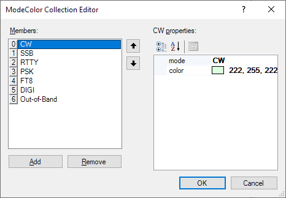
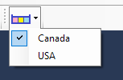

Band Plan Plugin
Purpose
This is a non-visual plugin that works behind the scenes and provides the band plan data to other plugins. In particular, the Frequency Display plugin receives information from this plugin when it needs to switch to the next or previous band, and the Waterfall Display plugin uses band plan information to paint the band map.
Settings
Mode Colors
Background colors for different Ham modes. Click on the ellipses button [...] to open the collection editor:

Add or remove the entries on the left panel, and set the mode name and color on the right panel. Click on the OK button to save the changes.
Band Plan Files
Band Plan information is stored in the JSON files located in this folder:
C:\ProgramData\Afreet\HamCockpit\VE3NEA\BandPlans
The users may create their own band plan files with a text editor and switch between them using a drop-down list on the Toolbar

It is recommended to have at least two band plans, one for the regular operation and another for contesting, since frequency allocation by mode changes significantly during the contests.
Band Plan File Format
The band plan file contains a list of band segments. Each segment has these parameters:
Band - the band name, preferably as defined in the ADIF format.
StartFrequency, EndFrequency - the boundaries of the band, in Hertz.
DefaultFrequency - when changing the bands, the radio will be initially tuned to this frequency. Assumed to be equal to StartFrequency if not specified.
PrimaryMode - the main mode in the given frequency segment. Used, in particular, to infer the mode of a cluster spot from its frequency.
ValidModes - all modes allowed in the segment. Used, in particular, by the skimmer plugins to determine where to decode a particular mode. If not specified, assumed to include only the primary mode.
MainSegment - On some bands, there is more than one segment used for a particular mode. For example, the 14074-14078 kHz and 14095-14099 kHz segments are used for FT8 on the 20m band. One of these segments must be marked as main.
Remark - optional text that will be appended to the segment label when information about the segment is displayed. For example, "F/H" is a remark in the 14095-14099 kHz segment because this segment is used for the Fox-and-Hound style QSO. The mouse tooltip on the band map is a combination of the band, mode and remark: "20M FT8 (F/H)"
Here is an example of segment definition:
{
"Band": "40M",
"StartFrequency": 7000000,
"EndFrequency": 7025000,
"PrimaryMode": "CW",
"ValidModes": ["CW","RTTY"],
"MainSegment": true,
"Remark": "Only Extra class in the USA"
}